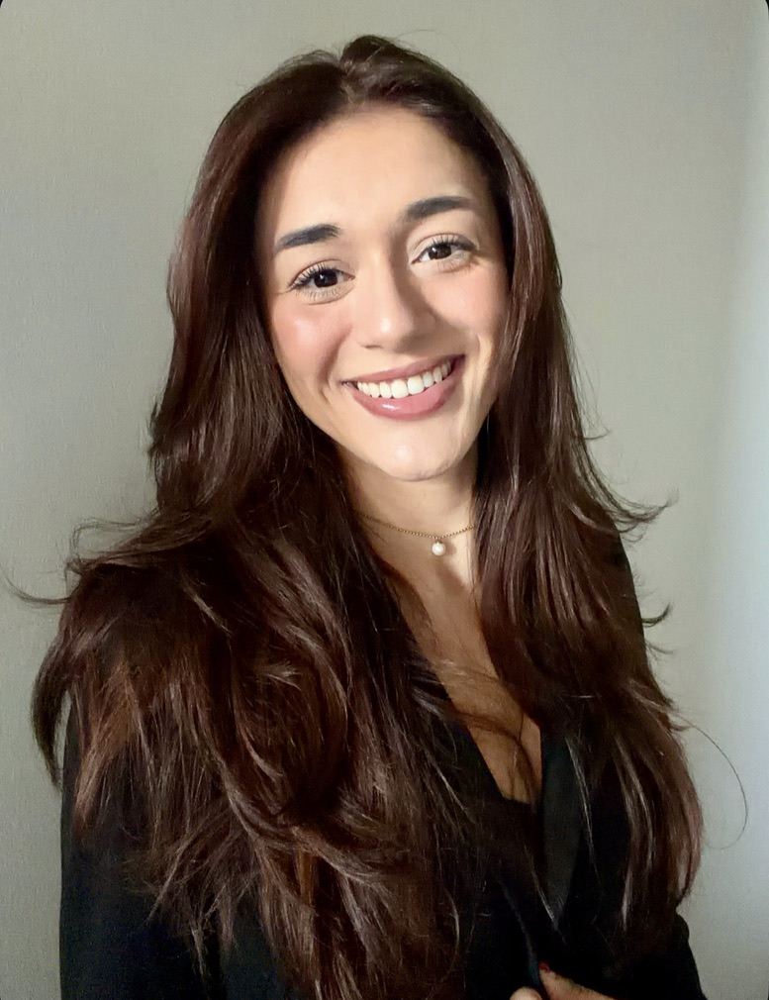
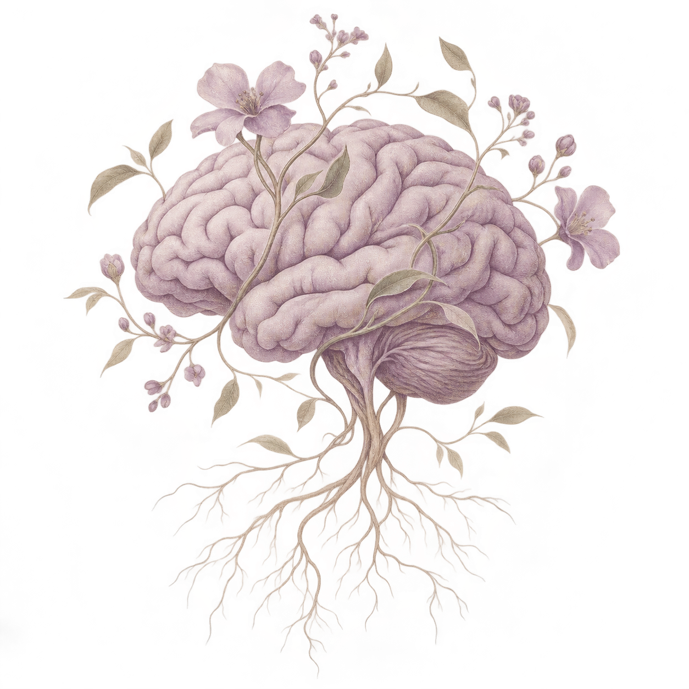

Autism & Neurodevelopment
Exploring individual differences in communication, cognition, and neurodevelopmental profiles.
Celebrating minds of all kinds.
I am an autism & neurodevelopmental speech-language researcher and behavior analyst with a passion for advocacy, inclusivity, and understanding the diversity of human communication. Through my work, I hope to bridge different ways of thinking, communicating, learning, and experiencing the world.
Welcome to my mind garden.

My academic journey is rooted in a desire to understand the human mind and the diverse ways in which we communicate, learn, and connect with one another.
As a doctoral student in Communication Sciences and Disorders at Northwestern University and a Board Certified Behavior Analyst, my work sits at the intersection of language, cognition, behavior, and neurodevelopment.
I am passionate about bridging research, education, and advocacy to cultivate a deeper understanding and appreciation of neurodiversity. I believe that every mind brings a unique perspective worth understanding, embracing, and celebrating.

Communication Sciences and Disorders
Northwestern University
Non-Clinical Communication Sciences
Northwestern University
Applied Behavior Analysis
The Chicago School
Speech and Hearing Science
University of Illinois Urbana-Champaign
Interdisciplinary qualifications spanning behavior analysis and communication sciences.
Board Certified Behavior Analyst
Licensed Behavior Analyst
International Behavior Analyst
Certified Speech-Language Pathology Assistant
Currently pursuing
Every mind tells a different story. My research explores the intersections of language, cognition, genetics, and behavior to better understand the diversity of human communication.

Exploring individual differences in communication, cognition, and neurodevelopmental profiles.
Investigating the nuances of social communication and the ways we convey meaning beyond words.
Examining genetic contributions to language and cognition, with a particular interest in FMR1-associated conditions.
Exploring variability in autistic communication profiles, social experiences, and camouflaging.
Bridging behavior analysis and communication sciences to inform meaningful, individualized support.
Integrating quantitative and computational methods to understand patterns in speech, language, and behavior.
Northwestern University
Under the mentorship of Dr. Molly Losh
My doctoral research focuses on understanding individual differences in language and social communication across neurodevelopmental and genetically associated conditions.

Research grows through curiosity, collaboration, and conversation. Here, I share my scholarly contributions and the opportunities that have shaped my development as a researcher.
Peer-reviewed publications and scholarly contributions.
Sharing research through scientific meetings, oral presentations, and academic conferences.
Communicating scientific discoveries through visual scholarship.
Emerging research interests, ongoing projects, and future directions.
I believe that growth is cultivated through connection, shared knowledge, and opportunities to learn from one another. My commitment to education extends beyond the classroom and into the communities we serve.
Cultivating curiosity, critical thinking, and an appreciation for individual differences in communication and learning.
Supporting the growth of emerging scholars through collaboration, encouragement, and shared discovery.
Creating opportunities for interdisciplinary connection, student engagement, and scientific exchange.
Championing accessible, inclusive, and neurodiversity-affirming approaches to education and research.
Teaching experience · Northwestern University
Autism Spectrum Disorders
Pediatric Language Disorders
Language & Cognition in Atypical Development
Introduction to Clinical Methods
Through my involvement in academic leadership and the Cognitive Science Ambassador Program, I am passionate about creating spaces for interdisciplinary dialogue, scientific curiosity, and meaningful connections within the academic community.
Growth looks different for every mind, and that is something worth celebrating.
Engaging with interdisciplinary communities that advance research, education, advocacy, and professional practice.
Some of the most meaningful opportunities for growth happen outside the classroom and beyond the walls of a research lab. I find purpose in giving back, building connections, and contributing to communities that celebrate the diversity of human experience.
Finding purpose through volunteering, service, and opportunities to support others.
Building meaningful relationships between academic institutions and the communities we serve.
Advocating for acceptance, accessibility, and the recognition of individual strengths.
Remaining curious, embracing new perspectives, and finding opportunities for personal and professional growth.
Beyond my professional identity, I am someone who values compassion, curiosity, connection, and the beauty of becoming.
My mind garden is a reflection of the things I am learning, the people who inspire me, and the person I continue to grow into.
Curiosity connects us. Compassion grounds us.
An overview of my academic training, research experience, scholarly contributions, teaching, and professional development.
I welcome opportunities for interdisciplinary collaboration, research conversations, and professional connections.
Department of Communication Sciences and Disorders
Northwestern University
Evanston, Illinois